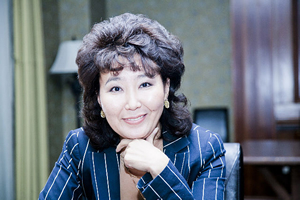
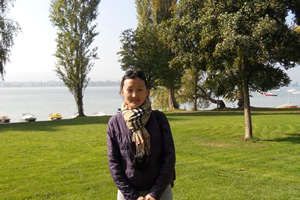
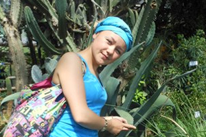

О нас
Информационное агентство «Восток-Телеинформ»
Информационное агентство «Восток-Телеинформ» создано в Улан-Удэ в апреле 2005 года. Успешно работает в информационном пространстве региона как поставщик оперативной и достоверной информации по самой различной тематике. Это экономика и социальная политика, новости предприятий и общественных организаций, экологическая ситуация в регионе и природоохранная деятельность, положение в минерально-сырьевом комплексе, сфера занятости, инфраструктура и транспорт и многое другое.
Ежедневно на сайте появляется от 12 до 20 новых сообщений о жизни Бурятии - о ситуации в политической сфере, о принятых республиканским парламентом законах и о кадровых перестановках в правительстве республики, о ситуации в сельском хозяйстве, недропользовании, образовании и дошкольном воспитании, поддержке предпринимательства, экологии и природоохранной деятельности, о проблемах жителей республики, о деятельности общественных организаций и так далее.
Ежедневно на сайт ИРА «Восток-Телеинформ» (www.vtinform.ru ) заходят жители российских городов - Улан-Удэ, Москвы, Иркутска, Санкт-Петербурга, Новосибирска, Читы, Екатеринбурга, Нижнего Новгорода, Краснодара, Томска и многих других. А также иностранцы, проживающие за рубежом россияне и выходцы из Бурятии - жители Великобритании, Нидерландов, Канады, Монголии, Испании, Казахстана, Мексики, Швеции, Португалии и других стран.
360-600 сообщений
столько новостей вещает ВТИ о жизни Бурятии в месяц
Тесное сотрудничество с правительством Бурятии, республиканским парламентом и с крупнейшими промышленными предприятиями позволяет журналистам агентства постоянно находиться в центре политических и экономических событий региона.
Рассказать о важных события жизни республики - главная задача журналистов ИРА «Восток-Телеинформ». Экспертами и ньюсмейкерами в новостях выступают первые лица министерств и ведомств республиканского уровня, представители федеральных органов власти, общественных организаций, предприятий. Кредо информационного агентства – объективность, оперативность и достоверность.
Коллектив
-

Мешкова Анжелика Викторовна
директор, член Союза журналистов
-

Александра Шагдарова,
выпускающий редактор
-

Ольга Михалёва
выпускающий редактор
-
Марина Иванова-Денисова
главный редактор член Союза журналистов России
Наши кадры
-
Мешкова Анжелика Викторовна
директор, член Союза журналистов
-
Александра Шагдарова,
выпускающий редактор
-
Ольга Михалёва
выпускающий редактор
-
Марина Иванова-Денисова
главный редактор член Союза журналистов России
Директор ИРА «Восток-Телеинформ»
Мешкова Анжелика Викторовна
член Союза журналистов
Контактная информация
Адрес: г. Улан-Удэ, ул. Каландаришвили, 23 (Дом печати) оф. 35
Почтовый адрес: 670000, г. Улан-Удэ, Главпочтамт, а/я 9559;
Телефон: (3012) 21-33-75; 21-75-09
e-mail: vostok-teleinform@yandex.ru
Учредители (соучредители): «Восток-Телеинформ»: ООО «Восток-Телеинформ» и ООО «Прима-Пресс».
Зарегистрировавший орган: Федеральная служба о надзору в сфере связи, информационных технологий и массовых коммуникаций (Роскомнадзор). Свидетельство о регистрации Эл.№ ФС77-52369 от 28 декабря 2012 года. СМИ перерегистрировано в связи с изменением названия, изменением формы периодического распространения. В свидетельство о регистрации СМИ внесены изменения в связи с изменением адреса редакции, изменением юридического адреса учредителя 28 декабря 2012 года.